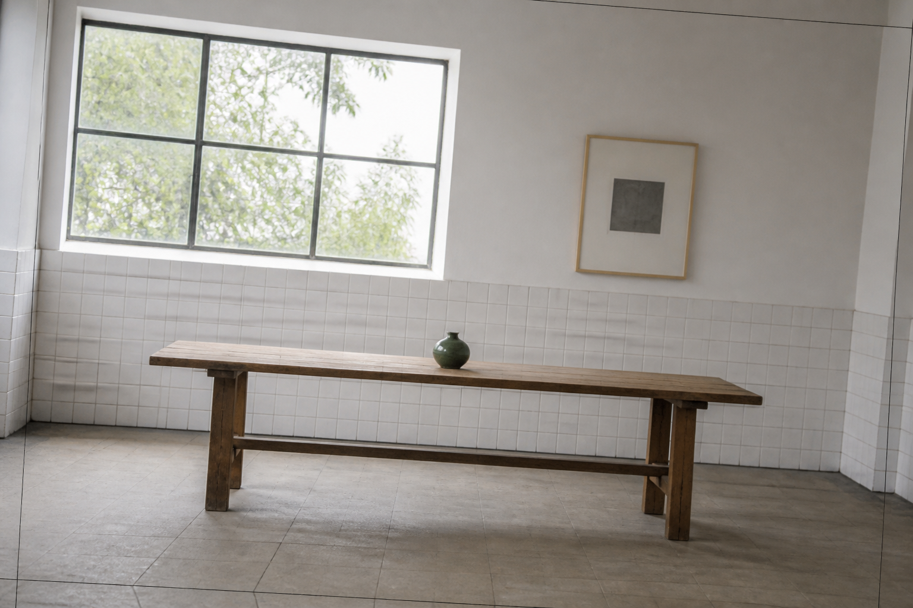

01
倾斜来源图

观察窗框、瓷砖线、桌面和画框：它们为拉直和边缘裁切提供可见参照。
- 来源
- 1536 × 1024 PNG
- 处理
- 无
项目原创图片 · 浏览器真实渲染
这张测试图由 Codex 内置图片生成能力创建，画面刻意顺时针倾斜约 5°，并包含窗框、墙砖和画框等几何参照。下方结果不是预制示意图：页面会调用产品自己的 EditState、Canvas renderer、编码重开与像素验证链即时生成。

观察窗框、瓷砖线、桌面和画框：它们为拉直和边缘裁切提供可见参照。
保持原画布比例，自动等比放大覆盖空角，因此四周会有少量真实裁边。
用于复核此前用户关心的组合：整角旋转、固定比例和小角度校正必须共享同一预览 / 下载几何。
正值扩展画面上方，适合修正仰拍造成的上窄下宽；窄侧保持满幅，宽侧会对称裁掉少量内容。
怎么判断
准备生成三份实际结果…